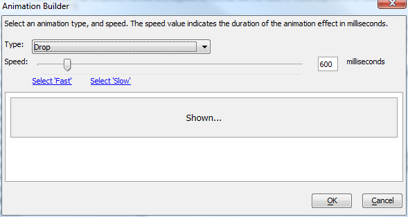
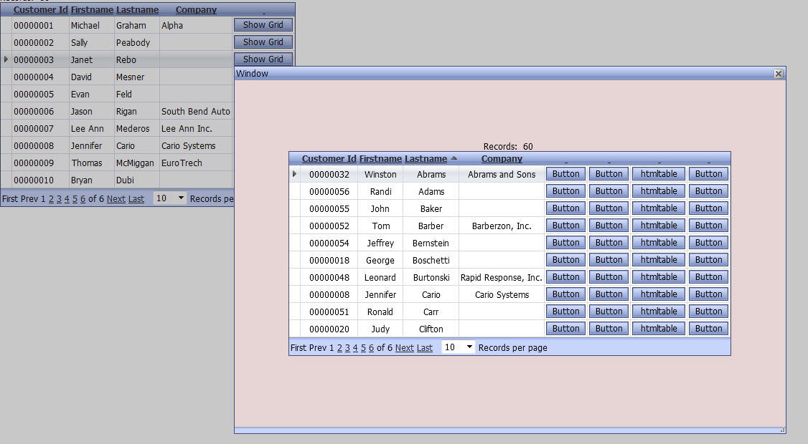

Ajax Windows
Animation
Animation effects have been added for pop-up Ajax windows.Ajax windows that contain IFrames, which in turn contain display PDF files, cannot be animated. As a result, the Animation property has not been made available for Ajax windows that host .a5w pages, since .a5w pages are hosted in an IFrame.
There are several animation methods that have been exposed. The 'slide' and 'fade' methods are based on methods in the jQuery core library. All of the other methods are based on method in the jQueryUI library. By default, both of these libraries are loaded. The Web Project Properties dialog contains settings which control if these libraries are loaded, and from where they should be loaded.
You can control the animation effect for the window display and the window close. You can also control the animation speed. If you use the smart field to choose an animation, the animation builder will pop up.

Certain animation styles will mess up the positioning of windows. If you find this to be the case, you should stick with the 'Fade' style for the 'show' animation.
Watch Video
Background Style Property
You can now set a background style property for pop-up Ajax windows. This will allow you, for example, to set a background color, or background image for the window.Centering Content
Ajax Windows that display Grids, Dialogs, or Custom Components can now automatically center the content in the window. You can specify if you want vertical, horizontal or both vertical and horizontal centering.The image below shows a pop-up Ajax window where a background color has been set, and the window contents has been centered on both the vertical and horizontal dimension.
